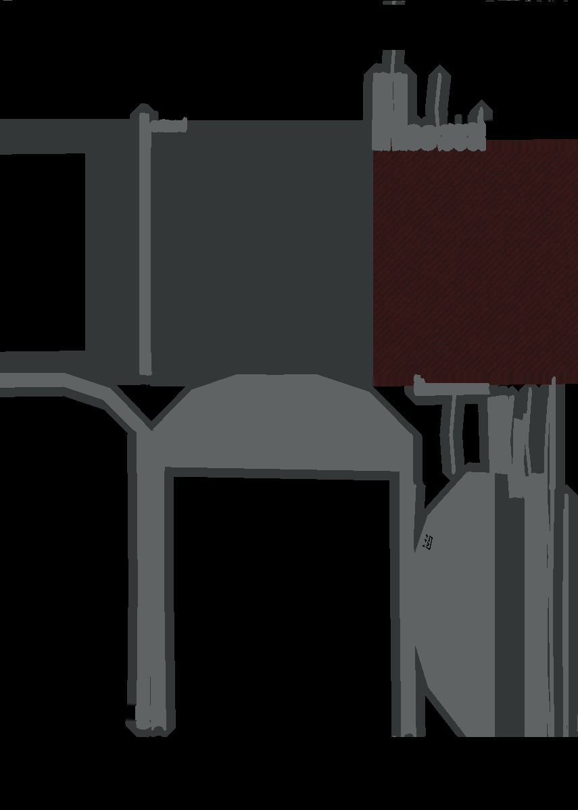

Johdanto
Tällä sivulla käyn läpi Ticorportate 2020 Projektisimulaatiossa itselleni tapahtuneita tehtäviä ja oppimisia. Projektimme nimi on Devoid Tomorrow joka on lyhykäisyydessään post-apocalyptinen roolipeli ”low-poly” tyylillä. Alustavasti minun työtehtäväni oli olla scrum master, mutta laajennettuna myös pelin tuottaja (katso tarkemmin mitä tuottaja yleensä tekee), yleinen apukäsi jokaiseen asiaan ja muutaman maaliskuusta alkaen otin myös liiketoiminnan vastuulleni. Etätyöskentelyn alkaessa roolini lisäykseen tuli avustava graafinen suunnittelija.
Jaoin suurimmat työtehtäväni erillisiin osiin ja pienet sekalaiset yhdeksi osaksi, mutta moni ei konkreettinen asia varmasti jää huomioimatta.
Blender
Alustava osaaminen Blenderillä oli minulle täysin nolla ja aloitin vuoden alussa harjoittelemaan työkalua tutoriaalien pohjalta. Ensimmäisten kuukausien aikana mallintamista ei tarvittu niin paljoa, jolloin tehtäväni keskittyi moneen muuhun. Etätyöskentelyn alkaessa kuitenkin aloin keskittymään siihen enemmän yrittäen aluksia oppia pelin teemaan sopivan tyylin, onneksi pelimme graafinen suuntaus oli erittäin aloittelija ystävällinen vähäisillä viivoilla ja terävillä kulmilla.

UV Mappaus
Mappaus on yksi yleisimmistä Blenderin toiminnoista ja käytin sitä lähes kaikkien mallien kanssa. Mappaus tekee jokaisesta 3D objektin pinnasta litteän ”kartoituksen”, jolloin malli on helppo teksturoida tai joissain tilanteissa myös maalata. Opin käyttämään projektin aikana UV Mappauksessa ”Smart Mapping” joka automaattisesti laittaa jokaisen pinnan tekstuuriin, mutta myös muokkaamaan sitä tapauksissa esim. jos vierekkäiset pinnat ovat täysin eri puolella tekstuuria, jolloin sitä pitää muokata näyttääkseen oikealta. Käytimme myös joihinkin objekteihin ”Project from view” tapaa jos tekstuuri oli jo valmiiksi tehty ja ilman työkalua kartoitus venyy koko objektiin tasaisesti, vaikka tekstuuri pitäisi olla vain edessä.
Shading
Shading eli varjostus on työkalu Blenderissä joka toteuttaa millä tavalla objekti piirretään ja valaistaan. Työkalua käyttäen pystyy tarkemmin muokkaamaan miltä haluat objektin näyttävän, kuin vaan värin ja muutaman pintamateriaalin mitä muuten olisi mahdollista vain käyttää. Useassa objektissa käytin perusvärin lisäksi ”kohinaa” tuottamaa, jolloin tekstuurista tulee realistisempi tämän tuottamien pienten ”epämuodostumien” ansiota väriin, sen avulla sain myös hyvin aikaan likaisen tai rähjääntyneen *fiiliksen objekteihin, joka toimii meidän pelissä erinomaisesti. Varjostukseen en myöskään hirvesti käyttänyt tutoriaaleja koska useasti halutaan realistista lopputulosta, mutta meidän projektiin se ei sopinut, joten päädyin oppimaan kokeilemalla erillaisia vaihtoehtoja.
Baking
Baketus tarkoittaa kun halutaan muuntaa objektin laskelmoidusta materiaalista ja varjostuksesta kuvallinen tekstuuri, joka vie paljon vähemmän suorituskykyä ja tilaa.
Baketus on oli aluksi hankalaa ja tuntuu kaikkia muita käyttämiäni Blenderin ominaisuuksia alukantaisemmalta, koska siinä jokaisen objektin kohdalla tuli jokin haaste vastaan, joko tietty materiaali
(esim. metalli) teki tekstuurista täysin mustan, monta objektia saattoi laittaa tekstuurin ei kohtaan mikä näkyy UV mappauksessa tai itse baketus otti liian paljon reunavaraa
jokaiselle materiaalille jolloin ne laaljentuivat haluamattomiin pintoihin.
Jostain syystä myös netistä ei löytynyt tästä työkalusta juurikaan apua eteen tulleihin ongelmiin,
joten homma oli yleensä aikaa vievää ja aika menikin ”trial and error” tyylillä saada jokainen malli teksturoitua halutulla tavalla.
Bakettaminen on ollut monelle ryhmämme noviisimallintajalle haaste, johon itse olen panostanut aikaa eniten ja pystyin yleensä auttamaan myös toisia siinä.

Demoja varten olen myös tehnyt renderöintiä helpottavan kartan jolla voi ottaa 360 asteisen renderöidyn videon objekteista tyhjän tai vihreän taustan edessä. Muutamassa assetin teksturoinnissa käytin myös hyväski Adoben Photoshoppia kopioimalla kuvan suuremmaksi ja yhdistämällä siihen toisen tason.
Blender Galleria
Tässä on projektin aikana tehdyt mallinnukset


{kind=link}
{kind=link}
{kind=link}
{kind=link}
{kind=link}
{kind=link}
{kind=link}
Scrum Master
Lähdin scrum masteriksi koska johtajuutta on aina kiinnostanut kokeilla, persoonana en kokenut olevani hirveän auktoriteettinen tai tarpeeksi ”tiukka” ja SM rooli vaikutti olevan oiva tapa opetella näitä sekä myös saada pientä kokemusta ryhmän organisoinnista.
Scrum masterina jokapäiväiseen työhöni kuului Daily scrumien pitäminen jossa olemme saman pöydän ääressä (tai etänä puhekanavalla) ilman turhia ärsykkeitä kuten puhelimia ja
keskustelemme mitä jokainen henkilö oli tehnyt eilen ja mitä aikoo tekevän tänään, nämä kestävät yleensä noin 10 minuuttia.
Päivittäiseen työhön kuului myös Zenhubin päivittäminen eli jos henkilö on kertonut saavan pyydetyn tehtävän tehtyä, siirrän sen jonossa seuraavaan,
jolloin kyseisen osa-alueen testaaja kokeilee tehtävää ja ilmoittaa siitä minulle, jonka jälkeen laitan tehtävän suoritetuksi.
Hoidin myös jokaisen ryhmäläisen työtuntien kirjanpitämisen ja muokkaamisen. Tunnit kirjattiin wordpressin työkalulla, joka oli linkitetty nettisivuumme kiinni.
Viikottain pidin myös Weely scrumin tai sprintin päätyttyä Sprint reviewn ja Retrospektiivin.
Reviewssä toimin yleensä kirjurina kun PO kertoi miten olemme päässeet sprintin tavoitteeseen ja mitä jäi uupumaan.
Meillä oli yksi päätestaaja joka hoiti taistelun ja koodiosuudet ja itse hyväksytin osan konsepteista ja animaatioista peliin sopiviksi.
Jos esimerkiksi animaatio ei ollut vaatimusten mukainen annoin tekijälle palautetta ja ideoita kuinka sitä voisi muuttaa tai parantaa, jotta animaatio olisi sopiva.
Scrumin rooli vei ensimmäisinä kuukausina yllättävän paljon aikaa, kun asioita oli paljon muistettavana ja käyttäjäkertomusten pilkkominen oli aluksi erittäin sekavaa. Sprinttien myötä kuitenkin opin paremmin keskustelemaan ryhmälle kokonaisuutena, sekä yksittäisille henkilöille. Pidin myös muutaman kerran yksittäisiä keskusteluja jokaisen ryhmäläisen kanssa kun ryhmällä tuntui oleman ongelmia, josta opin keskustelemaan ryhmän lisäksi myös yksittäisille henkilöille paremmin.
Olen oppinut myös kuuntelemaan ryhmäläisiä ja heidän ongelmiaan ja osannut muokata projektin työtapoja heille parhaiten sopivaksi ja työnkulun parantamiseksi.
Esimerkkinä tähän olisi kuinka yhdellä meidän työntekijällä oli viikko, jolloin mikään ei tuntunut onnistuvan ja häntä painosti kuinka olisi pakko saada jotain aikaan työtunteihin verrattaessa.
Kokeilimme yhdessä tapaa, missä muokkaisin hänen työtunteja sopiviksi sen mukaan kuinka paljon hän oli
saanut minäkin päivänä aikaan työmäärällisesti, hyvänä päivänä kun onnistui niin normaalit 6h ja huonompina 3h.
Tämä auttoi hänen työpanostustansa ja otti tarpeettoman työpaineen pois hetkeksi, kunnes lopulta pääsi normaalin työtahtiin.
Kyseinen metodi ei varmasti sopisi kaikille, koska tämä tarvitsee luottamusta ryhmän henkilöiden välillä, sekä pahimmassa tapauksessa voi viedä enemmän aikaa kun se hyödyttää.
Ensimmäisen etäviikon jälkeen huomasin kuinka jokaisen ryhmäläisen työmotivaatio oli hukassa DS aikaan, eikä ihmiset saanut haluttuja asioita tehtynä,
samalla kun ihmiset haikailivat toimistoympäristöä ja sanoen kuinka siellä tuli paremmin asioita tehtyä.
Halusimme PO:n kanssa kokeilla tehdä samanlaisen etäympäristön, mutta etänä eli teimme Discord kanavallemme jokaiselle ryhmälaiselle oman äänikavan joka toimisi heidän omana ”työhuoneena”,
jossa ollaan paikalla samanlailla miten olisi omassa toimistossansa.
Toisen henkilön etähuoneeseen pystyi tulla kysymään asioista tai pyytämään apua, jolloin ryhmähenki ja tiimin synergia palasi lähes samanlaiseksi mitä se oli ennen etätyöskentelyä.
Lyhyesti opin projektin aikana Scrum masterin näkökulmasta ryhmäläisten esteiden poistamisen lisäksi myös ajanhallintaa, stressin sietokykyä ja tärkeiden asioiden kirjaamista ylös. Vaikka en vieläkään koe olevani erinomainen johtaja, olen oppinut tasapainottamaan paremmin, milloin pitää ryhmäläisille olla jyrkkä ja milloin rennompi.
Karttasuunittelu
Meidän demossa olevan kerrostalon huoneiston pohjapiirroksen tein aluksi Minecraftia apuna käyttäen, jonka jälkeen jäljennin jokaisen palikan Excel taulukkoon vari koodaten mm. seinät, lattiat, ovet ja viholliset tein aluksi Minecraftia käyttäen, jonka jälkeen kopioin jokaisen palikan Excel taulukkoon vari koodaten mm. seinät, lattiat, ovet ja viholliset
Tärkeää tason suunnittelussa on myös osata johtaa pelaajaa sinne, minne haluat varsinkin kun emme halunneet karttanavigointia tasoihimme, joten esimerkiksi valaistuksella ja vihollisten sijoitus oli tärkeää. Nykyaikaisessa pelissä ei pysty niin paljoa pelaajakameralla näyttämään minne mennä, niin kuin vanhoissa peleissä. Kentässä myös halusin pystyä käyttämään klassisia avaimia, jolla päästä seuraavaan huoneeseen toisessa kerroksessa mutta huomasin nopeasta edestakaisin juoksusta kerrosten välillä voivan olla pelaajalle turhauttavaa.
Liiketoiminta
Alustavasti toinen ryhmäläinen otti vastuukseen liiketoiminnan, mutta muutaman kuukauden jälkeen hän halusin antaa minulle kopin siitä. Itse ainoastaan raapaisin pintaa liiketoiminnassa ja tein vain pakolliset tehtävät.
Suurin haaste liiketoiminnassa oli nettisivujen teko, jota toinen ryhmälainen oli jo tehnyt muttei ollut PO:n hyväksymä, joten oma tehtäväni oli korjata niitä. En ole tehnyt yhtään webbipuolen kursseja tai sitten koskenut WordPressiin aikaisemmin mutta pieniä korjauksia oli kuitenkin helppo oppia. Opin myös pitchausta sekä yleisesti puhumaan yleisölle paremmin tulleiden tehtävien takia.
Unity
Loppuviikoilla sain myös kokeilla viimeisessä sprintissä pelin tason koristelua meidän ryhmämme tekemillä asseteilla eli hakemaan tuomaan tietyn tiedoston peliin,
hakemaan erikseen sille tehdyn tekstuurin, jonka jälkeen yhdistäämään sen haluttuun objektiin.
Tavaroiden asettaminen pelimaailmaan oli lopulta yllättävän helppoa, mutta luulen Blenderin kokemukseni auttaneen paremmin hahmottamaan huonetta sekä olemaan luovempi anntetuilla asseteilla, muuttaen niiden kokoa
ja kiertosuuntaa.
Reflektointi
Vaikka pidin monesta omasta tehtävästäni ja kuinka pääsin kokeilemaan projektissa lähes kaikkea koodausta lukuun ottamatta, olisi mielenkiintoista nähdä olisiko laajempaa osaamista tullut,
jos olisin päässyt keskittymään yhteen työtehtävään. Olen huomannut miten Blenderillä tehdessä koin paljon enemmän onnistumisen ja ylpeyden tunnetta kuin muissa tehtävissä,
koska näin sain suoraan nähdä konkreettisesti mitä olen saanut tehtyä. Tälläisiä hetkiä olisin voinut kaivata enemmänkin,
koska koko kurssin aikana on ollut mielen päällä et mitä oikeasti olen saanut aikaiseksi ja miten näytän sen muille.
Niin monen osa-alueen itselleen haaliminen lopulta tuntuu että osaamista on tullut hieman kaikesta, eikä niinkään keskittinyt muutamaan tiettyyn osa-alueeseen tätä kuvaa hyvin käsite ”jack-of all master of none”
Tulevaisuutta miettien en tiedä vielä koenko 3D mallinnus olevan oma pääjuttuni, mutta oppimani asiat ovat kyllä olleet sen puolelta erittäin kiinnostavia.
Tiimin organisointi sekä henkilöiden auttaminen oli selvästi mieluisinta hommaa itselleni projektin aikana ja haluaisin sitä tehdä jatkossa enemmänkin,
myös isommassa skaalassa tai sitten henkilöiden kanssa jotka eivät olisi niin paljoa entuudestaan tuttuja, jolloin dynamiikka olisi aivan erilainen nykyisestä.